La conduite des procédés industriels nécessite toujours de maintenir une ou plusieurs grandeurs physiques constantes, qui peuvent être par exemple la pression à l’intérieur d’un four d’incinération et la température de production de la vapeur surchauffée.
La régulation permet de régler et de maintenir ces grandeurs constantes, ou valeurs de consigne. Pour pouvoir étudier la régulation, il est nécessaire de connaître et comprendre le fonctionnement d’un procédé industriel, que nous appellerons système réglé, ainsi que les différentes grandeurs physiques jouant sur ce procédé.
L’une des principales difficultés de l’étude des régulations dans les systèmes de production industrielle est d’isoler le système réglé et de clairement identifier les grandeurs physiques qui agissent sur ce système.
Pour mettre en évidence les différents systèmes et différentes grandeurs intervenant sur un procédé industriel, nous pouvons étudier un exemple domestique simple : la régulation de température dans un local.
Dans ce local, nous allons essayer de maintenir la température intérieure constante, généralement égale à 19 °C.
La température varie car les conditions climatiques extérieures varient. Elle est donc soumise à des grandeurs extérieures qui vont modifier et perturber l’équilibre à l’intérieur du local. Ces grandeurs extérieures seront appelées grandeurs perturbatrices ou, plus simplement, perturbations.
Si la température à l’intérieur du local diminue, il va falloir compenser cette perte en apportant de la chaleur pour que cette température retrouve sa valeur de consigne. Cet apport de calories est assuré par un système de chauffage. Dans le cas présent, le chauffage est assuré par un débit d’eau chaude qui traverse un radiateur. Si l’on désire augmenter la température dans le local, il faudra augmenter le débit d’eau chaude dans le radiateur. C’est donc sur ce débit d’eau chaude que l’on va jouer pour modifier ou régler les apports de calories. Pour cette raison, le débit d’eau chaude sera appelé grandeur réglante. C’est la grandeur réglante qui permettra d’obtenir une température intérieure constante à 19 °C. La température intérieure est donc réglée par la grandeur réglante. La température intérieure sera appelée grandeur réglée.
Pour résumer, on peut dire qu’une régulation a pour objectif de maintenir une grandeur constante à une valeur de consigne, et que pour cela elle joue sur une grandeur réglante qui permet de compenser les effets des grandeurs perturbatrices.
On peut donc représenter schématiquement le local et les différentes grandeurs physiques s’y rapportant par les schémas ci-dessous, composés des éléments suivants :
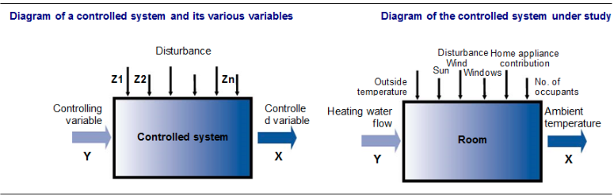
Fig. 1
Remarque : Il existe une norme internationale qui représente les différentes grandeurs physiques agissant sur un système réglé par les lettres X, Y et Z.
Liste des différentes grandeurs jouant sur le système réglé
Il est possible de jouer manuellement sur la grandeur réglante pour que la grandeur réglée soit la plus proche possible de sa valeur de consigne. Un système appelé système réglant permet d’automatiser cette tâche. Ce système réglant est beaucoup plus communément appelé boucle de régulation.
Le schéma ci-dessous permet de visualiser le système réglé (en noir), ainsi que les différentes grandeurs physiques, complété par le système réglant (en bleu).
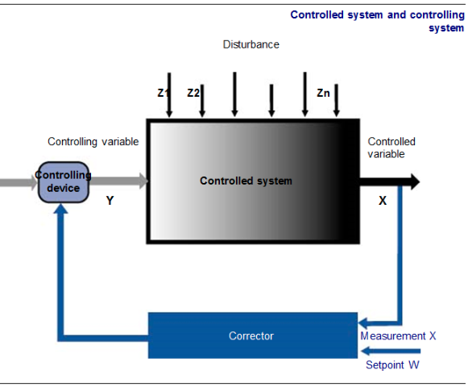
Fig. 2
La fonction du système réglant est donc de maintenir la grandeur réglée constamment à sa valeur de consigne.
Pour assurer cette fonction principale, le système réglant doit assurer plusieurs fonctions secondaires comme :
La mesure de la grandeur est assurée par un appareil appelé transmetteur. Le transmetteur a pour rôle d’effectuer une mesure en continu et aussi de convertir cette mesure en un signal utilisable par les autres appareils constituant la boucle de régulation. Les transmetteurs ont été étudiés dans le module n° 24. On se contentera de rappeler qu’ils sont principalement constitués d’une cellule de mesure adaptée à la grandeur physique mesurée et d’un étage convertisseur chargé de générer un signal standard utilisable par les autres appareils.
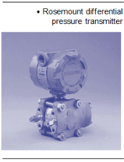
Fig. 3
RégulateurLa comparaison de la grandeur réglée à la consigne est assurée par l’instrument « intelligent » de la boucle de régulation, c’est-à-dire le régulateur. Si la comparaison entre la grandeur réglée et la consigne fait apparaître un écart, il va falloir assurer une correction. Cette correction est assurée elle aussi par le régulateur.
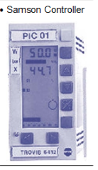
Fig. 4
Remarque : Le terme régulateur est à prendre au sens large, il peut s’agir d’un appareil discret appelée régulateur ou d’une fonction régulateur d’un système numérique de contrôle commande.
Organe régulantL’ordre de correction envoyé par le régulateur à l’organe réglant engendre une modification de la grandeur réglante. Les organes réglants les plus couramment utilisées sont les vannes, mais on rencontre aussi des variateurs de vitesse et des variateurs de puissance.
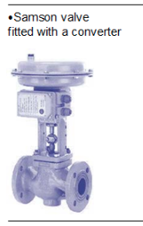
Fig. 5
Les fonctions des principaux équipementsLe tableau ci-dessous résume les différentes fonctions du système réglant ainsi que les appareils ou instruments assurant ces fonctions.
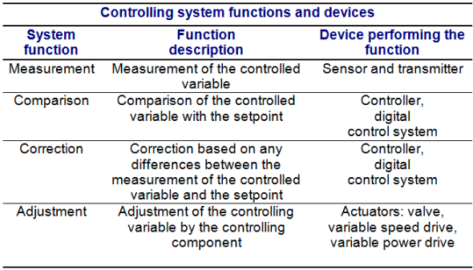
Fig. 6
Autres équipements d’une boucle de régulationUne boucle de régulation industrielle comporte donc au minimum un transmetteur, un régulateur et un organe réglant.
Ces trois instruments de régulation sont indispensables, mais peuvent ne pas être suffisants. En effet, il est souvent apparu nécessaire de garder une trace écrite de l’évolution de la grandeur réglée. Il est donc très fréquent de rencontrer un appareil appelé enregistreur.
De plus, pour des raisons de sécurité, il est très fréquent que l’on complète des boucles de régulation par des fonctions d’alarmes visuelles ou sonores. Les détecteurs de seuil d’alarme peuvent être des appareils, comme des pressostats, des thermostats par exemple, ou encore des fonctions programmées dans des régulateurs, des enregistreurs ou un système numérique de contrôle commande.
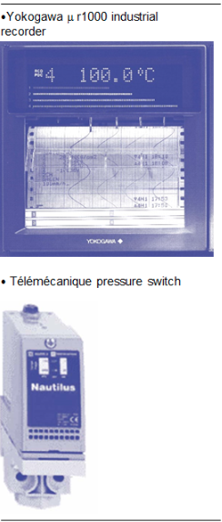
Fig. 7
Une indication en local des valeurs de mesure d’une grandeur physique est souvent utile. Cette fonction est assurée par les indicateurs, qu’ils soient analogiques ou numériques. Si les signaux de communication utilisés par les différents appareils de la boucle de régulation ne sont pas les mêmes, il est alors indispensable d’utiliser des convertisseurs. Par exemple, la plupart des régulateurs actuels sont électroniques et la grande majorité des vannes sont pneumatiques. Pour qu’un régulateur puisse commander une vanne, on utilisera donc convertisseur électropneumatique.
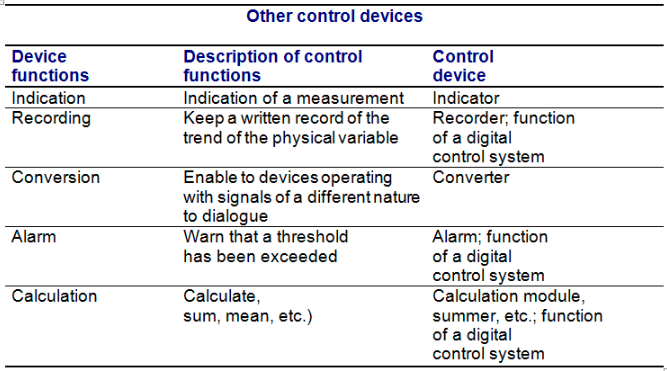
Fig. 8
On rencontre les boucles de régulation sous deux formes :
Le principe d’une boucle fermée est de mesurer la grandeur réglée et d’agir sur la grandeur régulante en fonction des écarts éventuels entre la grandeur réglée et la consigne.
Dans ce type de régulation, l’action correctrice s’effectue après que les effets des grandeurs perturbatrices aient produit un écart entre la mesure la consigne. Cet écart peut être également provoqué par un changement de consigne. Dans les deux cas, le rôle de la boucle fermée est d’annuler cet écart.
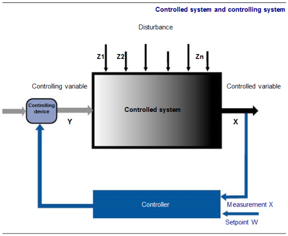
Fig. 9
Si les différents appareils constituant une boucle de régulation fermée sont correctement réglés, la précision obtenue par ce type de régulation est bonne car il y a un contrôle permanent de la grandeur réglée. Par contre, une variation brutale et de forte amplitude de la perturbation principale appliquée à un système réglé conduira à une correction très lente de la grandeur réglée.
Boucle ouverteLes régulations en boucle ouverte sont aussi appelées régulations a priori ou régulations prédictives. Le principe d’une boucle ouverte est de mesurer la perturbation principale et d’agir sur la grandeur régulante.
La boucle ouverte établit une action correctrice avant que la perturbation se répercute sur la grandeur réglée. Les boucles ouvertes sont donc plus rapides que les boucles fermées, mais elles sont rarement employées seules car elles ne contrôlent pas la grandeur réglée.
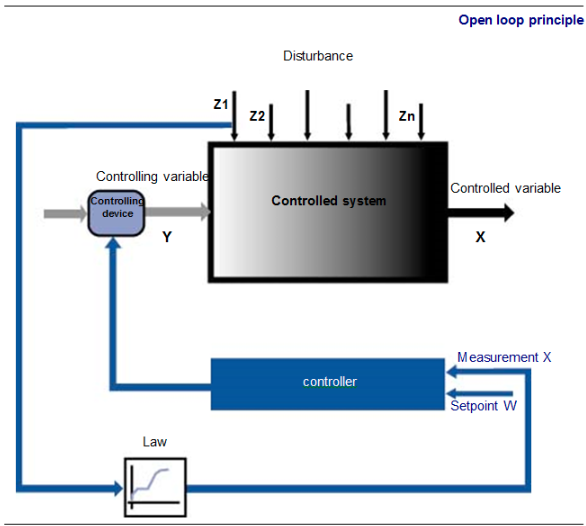
Fig. 10
marche/arrêtLes régulations tout ou rien sont également appelées régulations TOR, régulations deux états ou encore régulations « on-off control ».
La régulation tout ou rien, ou discontinue, trouve sa place dans la régulation en boucle fermée de procédés en utilisant des organes de réglages tels que contacteur électrique, unité de commandes à thyristors, électrovanne, résistance électrique, vanne motorisée. Le signal de sortie du régulateur peut prendre deux positions, deux états 0\
Les régulateurs, associés aux organes régulants cités précédemment, constituent des ensembles généralement meilleur marché qu’en régulation continue. En général, le régulateur est monobloc mais il peut être incorporé dans un système numérique. Contrairement à la régulation continue, la technologie de l’organe réglant en discontinue impose un régulateur spécifique.
Constitution généraleLes régulateurs tout ou rien sont électromécaniques ou électroniques. Montés localement, ils sont parfois aveugles, c’est-à-dire sans aucun affichage ou avec une indication de la mesure et de la consigne. Le capteur de mesure vient en général directement sur le régulateur. La sortie du régulateur commande un relais électromécanique à contact inverseur un relais statique. Dans les deux cas, le pouvoir de coupure est limité. En général, il n’y a pas de commande manuelle sur ce type de régulateur. Les pressostats et les thermostats utilisés dans les systèmes d’alarme peuvent être employés comme un régulateur tout ou rien.
Fonctionnement du régulateurComme le montrent les figures ci-dessous, lorsque la mesure est inférieure à la consigne, la sortie du régulateur est à 100\
Lorsque la sortie du régulateur est nulle, la mesure continue à augmenter. Ceci est dû à l’inertie du système réglé. Au bout d’un certain temps, la sortie du régulateur étant toujours nulle, la mesure diminue. On retrouve ce phénomène d’inertie lorsque la mesure passe sous la consigne. La régulation tout ou rien introduit donc une oscillation permanente de la grandeur réglée autour de la consigne. La mesure n’est donc jamais est égale à la consigne, mais oscille en permanence autour de la consigne. On utilise ce type de régulation, pour des raisons économiques, lorsque l’on n’a pas besoin d’une grande précision.
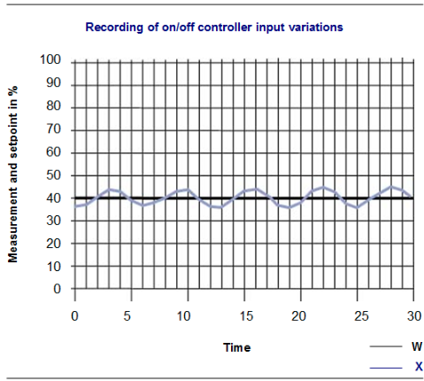
Fig. 11
[width=0.6] {Images/M25/M25_12.png}
On rencontre plus souvent des régulations tout ou rien avec différentiel. Le principe est identique au précédent mais le changement d’état de la sortie ne s’effectue pas par comparaison entre la mesure et la consigne mais par comparaison entre la mesure et une limite supérieure ou inférieure. La limite supérieure est obtenue en additionnant un écart différentiel (d) à la consigne. La limite inférieure est obtenue en retranchant un écart différentiel (d) à la consigne.
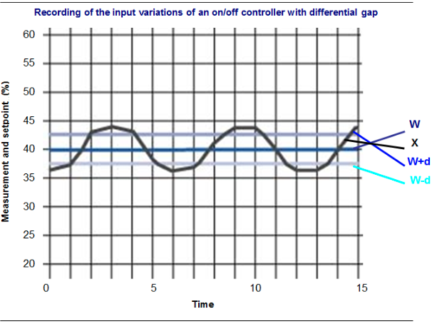
Fig. 12
[width=0.6] {Images/M25/M25_14.png}
Le mode de régulation tout ou peu est identique mode de régulation tout ou rien, mais l’action sur l’organe de réglage est comprise entre une valeur maximale (100\
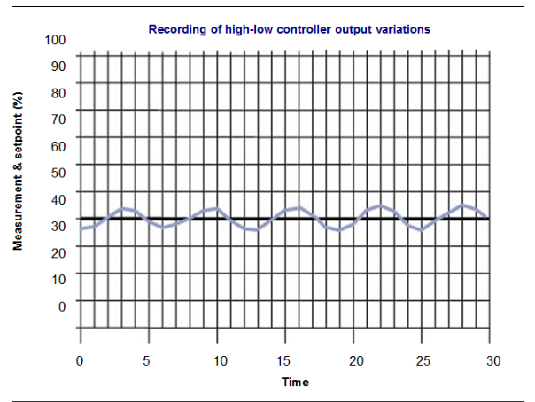
Fig. 13
[width=0.6] {Images/M25/M25_16.png}
Comme nous l’avons vu dans le deuxième chapitre, les régulateurs comparent la mesure à la consigne et génèrent un signal de correction en fonction de cet écart. Ce signal de correction n’est plus limité à deux valeurs comme c’est le cas pour les régulateurs discontinus, mais peut évoluer progressivement d’une valeur minimale (souvent 0\
Comme le montre la figure ci-dessous, la comparaison entre la mesure et la consigne est assurée par un comparateur et la correction est assurée par un module P ou proportionnel, PI ou proportionnel intégral, PID ou proportionnel intégral dérivé pour les régulateurs à action continue.
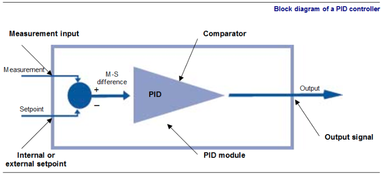
Fig. 14
Pour mettre en service un régulateur à action continue, il faudra régler son sens d’action puis ses différentes actions (proportionnelle, intégrale et dérivée).
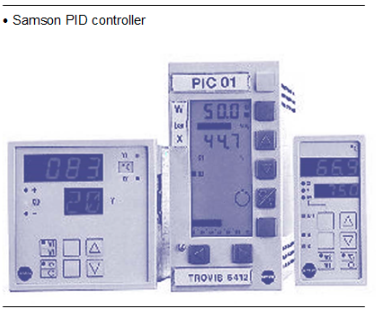
Fig. 15
Tous les régulateurs à action continue, qu’ils soient en mode P, PI ou PID, possèdent un premier réglage appelé sens d’action. Le sens d’action d’un régulateur est un réglage très important car il détermine si la sortie du régulateur doit augmenter ou diminuer quand la mesure est supérieure à la consigne.
$$ Par définition, on dit qu’un régulateur est en sens direct si la sortie augmente quand la mesure augmente. Le comparateur est donc réglé pour soustraire la consigne à la mesure.
$$ Par définition, on dit qu’un régulateur est en sens inverse si la sortie diminue quand la mesure augmente. Le comparateur est donc réglé pour soustraire, cette fois-ci, la mesure à la consigne.
Le sens d’action du régulateur est une conséquence de celui des autres éléments de la boucle. Donc, il faut connaître (ou choisir) le sens d’action des autres éléments de la boucle de régulation. Les autres éléments sont : le transmetteur, le convertisseur et la vanne de régulation.
Sens d’action d’un transmetteurPar définition on dit qu’un transmetteur est en sens direct si la sortie augmente quand l’entrée augmente. Par définition, on dit qu’un transmetteur est en sens inverse si sa sortie diminue quand l’entrée augmente.
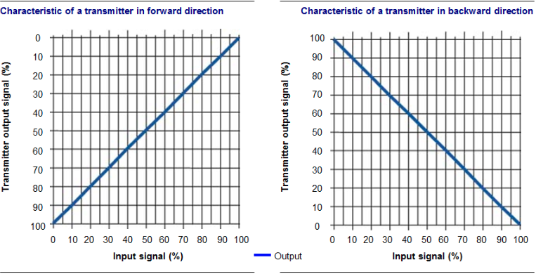
Fig. 16
Sens d'action d'une vannePar définition on dit qu’une vanne est en sens direct si la vanne se ferme quand le signal de commande croît. On dit aussi qu’elle est « normalement ouverte » (NO) ou « ouverte par manque d’air » (OPMA).
Par définition on dit qu’une vanne est en sens inverse si la vanne se ferme quand le signal de commande décroît. On dit aussi qu’elle est « normalement fermée » (NF) ou « fermée par manque d’air » (FPMA).
Le choix du sens d’action d’une vanne est dicté par les contraintes de sécurité de l’installation. Lors d’un défaut de l’alimentation en puissance électrique ou pneumatique, l’installation doit se mettre en position de replis, pour laquelle la sécurité des personnes et des biens est assurée.
Le sens d’action du régulateur dépend principalement de celui de la vanne, car la majorité des transmetteurs sont en sens direct.
ExemplePrenons une régulation de niveau dans une cuve. Le niveau dans cette cuve ne doit pas monter trop haut, ceci pour éviter tout risque de débordement. La boucle de régulation est constituée d’un transmetteur, d’un régulateur électropneumatique et d’une vanne. Intéressons nous maintenant au sens d’action des différents éléments de cette boucle. Lorsque le niveau dans la cuve augmente, la sortie du transmetteur augmente celui-ci est donc en sens direct. Quand l’entrée du convertisseur électropneumatique augmente, sa sortie augmente ; il est donc aussi en sens direct. Choisissons le sens d’action de la vanne.
Pour des raisons de sécurité on doit à tout prix éviter que le niveau dans la cuve monte trop haut. En cas de coupure d’air de commande, il faut donc que la vanne se ferme. La vanne doit donc être normalement fermée. Nous pouvons maintenant déterminer le sens d’action du régulateur. Supposons que le niveau dans la cuve augmente et dépasse la consigne, il faut donc fermer la vanne. Si le niveau dans la cuve augmente, le transmetteur étant en sens direct, sa sortie augmente. Comme il faut fermer la vanne, le signal de commande de celle-ci doit diminuer. Le convertisseur électropneumatique étant en sens direct, pour que sa sortie diminue, il faut que son entrée diminue. L’entrée du convertisseur électropneumatique est en fait la sortie du régulateur. Il faut donc que la sortie du régulateur diminue alors que son entrée (sortie du transmetteur) augmente. Le régulateur doit donc être en sens inverse.
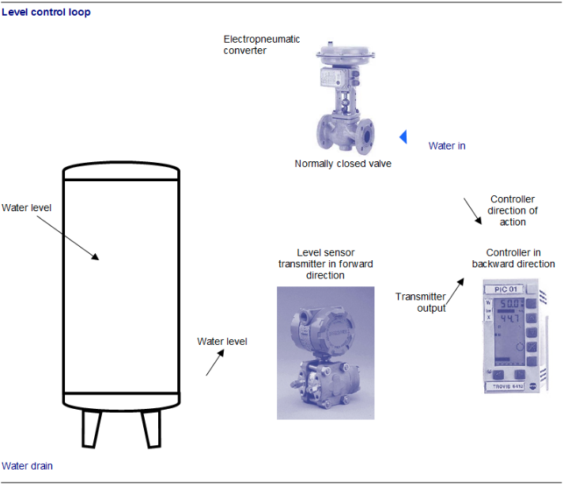
Fig. 17
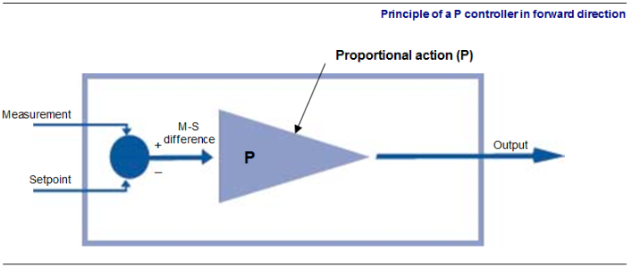
Fig. 18
Les régulateurs à action proportionnelle sont aussi appelés régulateurs proportionnels ou, tout simplement, régulateurs P. Avec ce type de régulateur, pour toute variation entre la valeur mesurée et la valeur de consigne le régulateur délivre un signal de correction proportionnel à cet écart. Le rôle de l’action proportionnelle est donc d’amplifier les écarts entre la mesure et la consigne. Lorsque l’on règle l’action proportionnelle d’un régulateur, on modifie donc l’amplification ou gain d’amplification (Gr).
L’équation (1) d’un régulateur P s’exprime ainsi :
équation A
\[ Y = Gr (XW)+Y0 \]
Où :
Le gain est le coefficient qui permet de régler l’importance que l’on donne à la différence entre la valeur de mesure et la valeur de consigne.
Exemple de l’évolution du signal de sortie du régulateur P de niveau d’une cuve : La mesure du niveau indique que la cuve est remplie à 20\ À ce moment, le process veut que le niveau soit à 20\ Le régulateur a une valeur Y0 fixée à 0\ La sortie du régulateur est donc égale à : Y = 2 ( 20 – 20 ) + 0 = 0\
Au temps t = 5, le niveau d’eau dans la cuve passe de 20 à 30\ La sortie du régulateur devient donc égale à : Y = 2 ( 30 – 20 ) + 0 = 20\
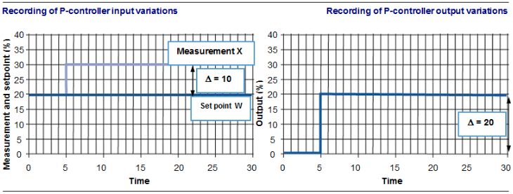
Fig. 19
Bande proportionnelleSur les régulateurs, il très rare de pouvoir régler directement le gain. Le réglage disponible est souvent appelé bande proportionnelle (noté BP, PB ou XP). La bande proportionnelle est donnée par la formule :
\[ PB = 100 1{Gr} \]
La bande proportionnelle est exprimée en \ Le tableau ci-dessous fournit des valeurs de bande proportionnelles pour diverses valeurs de gain.
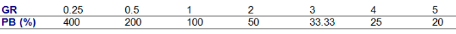
Fig. 20
En observant ce tableau, on peut remarquer que la bande proportionnelle n’est pas limitée à 100\ Afin de visualiser ce que signifie la bande proportionnelle, il est intéressant de tracer l’évolution du signal de sortie du régulateur P en fonction de la mesure.
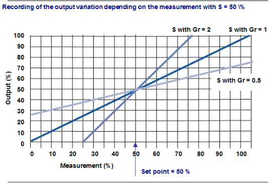
Fig. 21
En observant le réseau de courbe ci-contre, on peut remarquer que la bande de proportionnelle représente la variation de mesure qui provoque une variation de 100\ On peut voir aussi que plus la bande proportionnelle est faible, plus le régulateur est sensible. Si la bande proportionnelle est trop faible, la courbe du régulateur sera proche de celle d’un régulateur à action discontinue ce qui va engendrer un pompage (c’est-à-dire une oscillation de la mesure autour de la consigne).
Les régulateurs à action intégrale sont aussi appelés régulateurs intégrateurs ou plus souvent, tout simplement, régulateurs I. Le rôle du régulateur à action intégrale est d’annuler l’écart résiduel (entre la mesure et la consigne) qui subsiste souvent avec l’usage de régulateurs à action proportionnelle. Le régulateur à fonction intégrale permet donc de compenser lentement (mais sûrement) un petit écart de la mesure par rapport à la consigne. Son action n’est donc pas brusque.
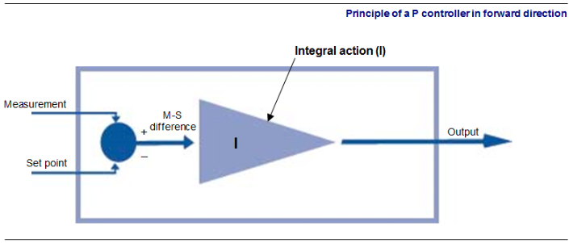
Fig. 22
Les graphiques suivants montrent que l'augmentation de 20 à 30 \
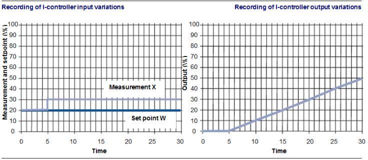
Fig. 23
Le régulateur à action intégrale est généralement intégré à un contrôleur à action proportionnelle. L’action intégrale associée à l’action proportionnelle transforme un échelon d’entrée en un échelon de sortie (dû à l’action proportionnelle) additionnée d’une rampe (dû à l’action intégrale). L’action proportionnelle laisse toujours subsister un écart résiduel entre la mesure et la consigne, cet écart sera donc progressivement annulé par la « rampe » de l’action intégrale.
Exemple
On peut visualiser l’évolution du signal de sortie d’un régulateur PI si on fixe arbitrairement la mesure et la consigne à 20\
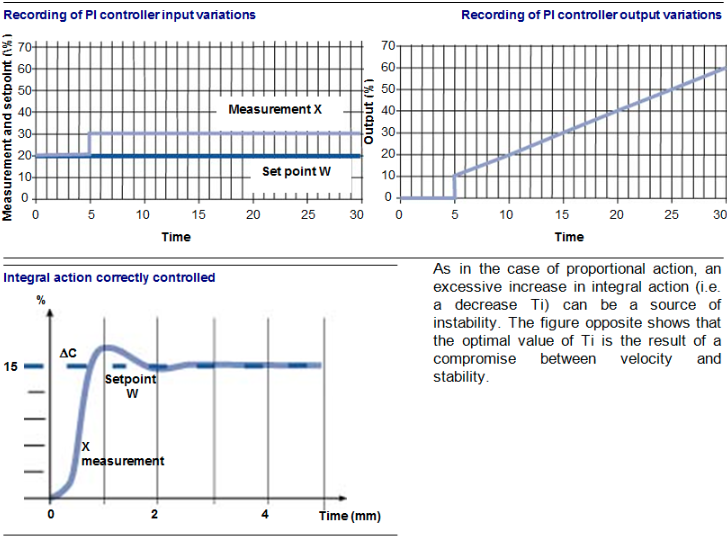
Fig. 24
Comme dans le cadre de l’action proportionnelle, une augmentation excessive de l’action intégrale (c’est-à-dire une diminution Ti) peut-être source d’instabilité. La figure ci-contre montre que la valeur optimale de Ti est le résultat d’un compromis entre la rapidité et la stabilité.
Le rôle de l’action dérivée est de réagir immédiatement au changement de la mesure du procédé. Elle permet d’obtenir une réponse plus rapide de la régulation. C’est la raison pour laquelle on dit souvent que l’action dérivée « anticipe ». Une valeur excessive de l’action dérivée peut entraîner l’instabilité.
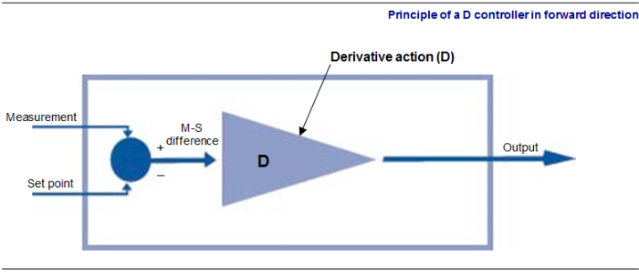
Fig. 25
Le contrôle à l’aide d’une fonction dérivée permet une réaction instantanée à un changement d’allure de l’évolution de la mesure par un saut immédiat du signal de sortie.
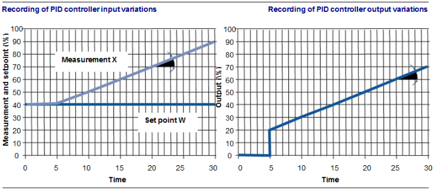
Fig. 26
On observe dans les représentations graphiques ci-dessus qu’au temps t = 5 la mesure commence à diverger de la consigne et s’en éloigne à une allure de 1\
Notons que l’action dérivée ne peut pas être utilisée seule. L’action dérivée associée à l’action proportionnelle transforme une rampe d’entrée en un échelon de sortie (dû à l’action dérivée) additionné d’une rampe (due à l’action proportionnelle).
Essayons maintenant de sentir à travers un exemple mécanique le fonctionnement d’un PID. Nous ferons quelques entorses aux mathématiques des actions I et D afin de faciliter la compréhension de ce mécanisme de régulation. Regardons attentivement chacun des éléments du schéma suivant.
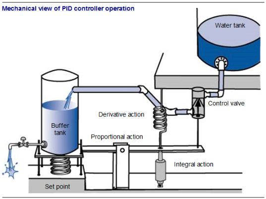
Fig. 27
La consignePour que le plateau suspendu situé à gauche du schéma, supportant la cuve tampon, soit à l’horizontale et donc que la vanne soit fermée, il faut qu’il y ait équilibre entre le poids d’eau dans la cuve et la force de répulsion du ressort. En fonction du niveau d’eau désiré dans la cuve, on adaptera la caractéristique du ressort, c’est la consigne.
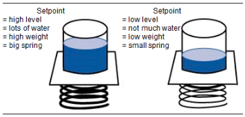
Fig. 28
L’action proportionnelleLe gain de l’action proportionnelle est représenté par un bras de levier. Plus l’action proportionnelle est grande, plus l’amplitude de mouvement sera grande au niveau de la vanne. On adaptera les dimensions du bras de levier, c’est l’action proportionnelle.
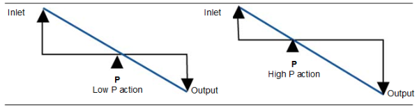
Fig. 29
L’action intégraleElle est représentée par un piston (une sorte d’amortisseur de voiture). Celui-ci va offrir une résistance au mouvement de la barre. Comme l’action I, un piston ne s’oppose pas au mouvement, il le ralentit. Un gros piston sera représentatif d’une action I importante, un petit piston d’une action I faible.
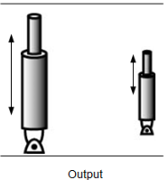
Fig. 30
L’action dérivéeElle est représentée par un ressort, car elle favorise le sens du mouvement. Dans notre exemple, le ressort tire sur la barre. Dès que la cuve se vide, il amplifie son déplacement ascendant. Lorsque la cuve se remplit, le ressort comprimé amplifie le déplacement descendant.
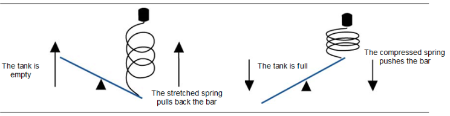
Fig. 31
La combinaison des actionsUne bonne régulation PID permet de maintenir de façon stable le niveau dans la cuve comme défini par la consigne, c’est-à-dire qu’un écart est rapidement corrigé et le niveau se stabilise rapidement à la consigne. Le poids relatif de chaque action (P, I, et D) permet d’atteindre le deux objectifs : rapidité et stabilité. Par exemple, dans une combinaison d’action PI, on comprend bien qu’un petit piston (action I) ne pourra pas grand chose contre un grand bras de levier (action P).
Les différents signaux de communication entre les instruments de contrôle sont standardisés.
Le signal standard électrique est un courant continu variant de 4 à 20 mA. Par exemple, un transmetteur électronique de pression étalonné à une échelle de 0 à 5 bars (en sens direct) aura la caractéristique suivante :
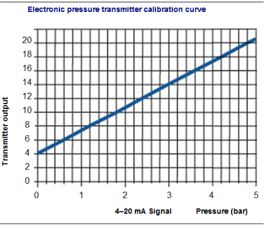
Fig. 32
Remarque : Il existe un autre signal correspondant au signal 4-20 mA. Il s’agit d’une tension continue variant de 1 à 5 V. Le signal 4-20 mA est facilement transformable en signal 1-5 V par l’emploi d’une résistance de précision de 250 ohms. La transformation inverse est réalisée par un équipement électronique appelé convertisseur.
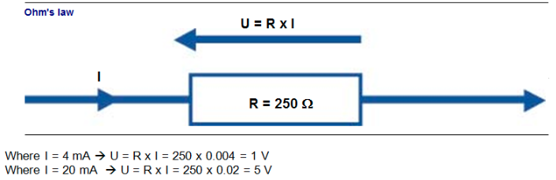
Fig. 33
Le signal standard pneuma-tique est une pression variant de 0,2 à 1 bar. Par exemple, un transmetteur pneumatique de pression étalonné à une échelle de 0 à 5 bars (en sens direct) aura la caractéristique suivante :
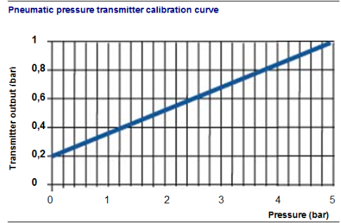
Fig. 34
Remarque : Pour délivrer une pression variant de 0,2 à 1 bar, les appareils pneumatiques doivent être alimentés à une pression de 1,4 bar ± 0,1 bar.
Les liaisons numériques sont de type parallèle ou série. Elles permettent la communication entre une unité centrale et divers périphériques. Ces liaisons sont également nécessaires pour communiquer avec d’autres systèmes. Les liaisons s’appuient sur un support matériel (bus) et sur un protocole.
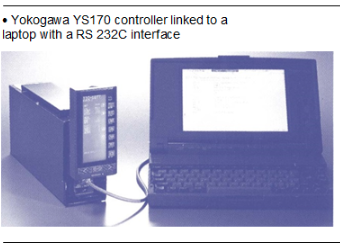
Fig. 35
Le bus de communication peut être parallèle ou série. Les échanges sont unidirectionnels ou bidirectionnel. Le protocole de transmission est un ensemble de règles qui définissent les échanges entre l’émetteur et le récepteur.
Les éléments d’un protocole sont :
Le mode de transmission définit la structure d’une information numérique. Celle-ci est constituée de bits de début et de fin d’information, de bits de parité qui assurent une détection d’erreur de transmission, de bits de données qui représentent l’information à transmettre. Suivant le code de transmission employé, les bits de données représentent une valeur, un caractère alphanumérique, des symboles, etc.
figure[H]
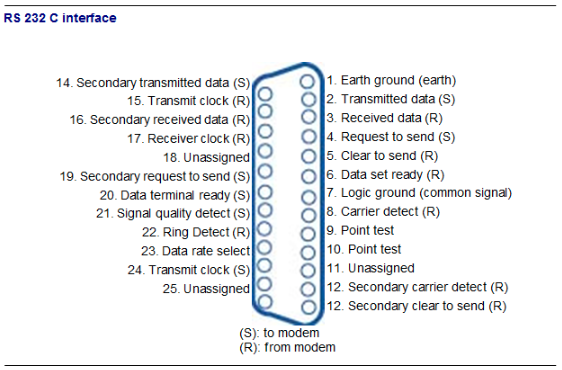
Fig. 36
{figure}Les bus parallèles permettent des vitesses d’échange élevées. Les bus série sont utilisés pour relier une unité centrale à des périphériques, tels que des automates programmables, des régulateurs numériques, des ordinateurs personnels… Les liaisons série sont normalisées. Les plus utilisés actuellement sont les liaisons RS 232C et RS 422. Ces normes définissent la vitesse maximum, le nombre de conducteurs, la longueur maximale des câbles, les niveaux de tension, les connecteurs et les repères, etc.
On peut classer les systèmes numériques industriels utilisés en régulation de la façon suivante :
Il s’agit de boucles de régulation situées à proximité du procédé à réguler. Ces boucles de régulation sont constituées au minimum d’un transmetteur, d’un régulateur, d’un convertisseur électropneumatique et d’une vanne pneumatique (comme le montre les figures précédentes). Ces régulations sont autonomes et ne possèdent pas de retour d’information vers un autre endroit du site industriel.
Dans ces systèmes, une seule unité centrale gère l’ensemble des entrées et sorties. Un calculateur assure l’ensemble des tâches. Ces systèmes sont souvent orientés vers la supervision et la gestion. Les fonctions de ces systèmes sont :
Le problème de ce type d’architecture est qu’une défaillance du calculateur entraîne l’impossibilité de fonctionnement de toutes les boucles de régulation. Ceci explique que le système centralisé soit passé de mode. Il faut toutefois noter qu’il existe des solutions à ce problème (second calculateur de secours, régulateurs de secours sur les boucles de régulation les plus importantes, commandes manuelles de secours).
On parle aussi de systèmes répartis. C’est ce type d’architecture que l’on utilise actuellement. Ces systèmes peuvent être considérés comme des systèmes modulaires. Chaque module permettant de faire de la régulation, de l’acquisition, des traitements logiques, etc. gère un nombre limité de boucles de régulation (généralement de huit à seize). Chaque module est en fait un micro-ordinateur et possède tous les éléments qui lui confèrent son autonomie, justifiant ainsi le terme de répartis par opposition aux systèmes centralisés.
Des régulateurs de secours peuvent assurer une redondance pour certaines boucles de régulation. Les modules répartis peuvent être reliés à des interfaces opérateur par l’intermédiaire de bus de dialogue, ce qui permet d’assurer la supervision de l’ensemble. Ces systèmes sont bien adaptés pour gérer un grand nombre de boucles. Ils possèdent une grande souplesse de conduite.